Capture the Flag is easily the most popular type of game in Tribes 2.
CTF is a team based game where the objective is to get the enemies flag from
their base while ensuring that your own flag is defended.
To capture, you must grab the enemies flag by touching it and return it
to your flagstand. Your flag MUST be at it's stand in order to capture. If a
player is killed while in possession of the flag, the flag drops to the ground.
Unless it's grabbed by another teammate it will remain on the ground until it
either returns to the flag stand by the enemy touching it or the return limit
running out.
It should be noted that if a player goes out of bounds while in
possession of the flag that the flag will be dropped on the edge of the out of
bounds boundary.
When the flag is captured the capturing team receives 100 points. When
the flag is grabbed from the enemy flag stand the grabbing team receives 1
point. The game ends when either time runs out (in which the team with
the most points wins) or when the target number of captures have been met by
a team (Usually 800 points).
Strategy:
The most underlooked aspect of the game by newbies. You have
to remember that THIS IS NOT YOUR STANDARD FPS. T2 is not just a run and gun
shoot `em up. It's a thinking mans game, and if you don't act accordingly you
won't last long.
Communicate!:
In *any* team based game communication is essential. Let your team know
what you're doing. Tell them the status of the enemy base. Give them as much
information as possible so they know where your team stands and what they
should be doing. Also, listen to what they're telling you. If the flag carrier is
requesting backup, go give him a hand. If someone informs you of an enemy
attacking the generators, go assist them. Respond to your teams requests
whenever possible. I assure you it's worth the time and effort.
Move, Move, Move:
As the title suggests, keep yourself mobile. A stationary target is an
easy target, something you don't want to be. The obvious exceptions here are
when you're in need of greater accuracy for, say, locking on with a Missile
Launcher, or using the chaingun to pick off a damaged airborne enemy. Even
still, in these situations keep aware of enemy positions. If you see an inbound
Scout with his Disc Launcher pointed at you, get outta there. At any time when you're in the open and not moving, you make a very
tempting target for snipers. This can be a problem, especially when in Scout
armor. Keep this in mind when using outdoor Inv. Stations and Vehicle Pads as
they are hotspots for sniper attacks.
Dress For Success:
Equipment loadouts need to be suited to the task at hand. Going on a
flag run? It's a good idea not to be wearing Juggernaut armor, as speed and
mobility are essential. Defending indoors? Leave the Scout at home and get
yourself some Jug. Think about what you're doing, what is required to do it,
and equip yourself accordingly.
Loot the Corpses:
When you kill a player he drops all of his equipment, ammo, and packs.
When you run over said corpses you automatically pick up any needed equipment
and ammo. This can be extremely valuable as running over every corpse you see
will keep you well supplied and prolong your battle readiness. There's nothing
worse than running out of ammo in the middle of a duel, so make sure you're
well supplied at all times.
Remember the Health Kit:
A number of times I've been in a duel with a player, and when I kill
him I'll run over his corpse and pick up a health kit. This shouldn't be
happening. The health kit can give you that little extra edge that means
survival. Use it.
Know Your Role:
Yeah, The Rock knows his stuff. Pick a task and stay with it. Decide
what you're going to do, attack, defend, deploy equipment, and let your team
know. When possible try to fill in where it's needed. If your flag is being
captured every 2 minutes, defend. If no one is attacking, go offence. Try to
be where you're most useful.
Armors:
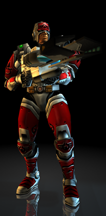
The
Scout
class armor is the lightest and fastest armor available for
use. If mobility and agility are your thing, then Scout armor is what
you'll need. A Scout can be in, flatten an enemy, and be gone before
the enemy knows what hit them. Scout armor is limited in that it may
not use certain heavy weapons, cannot carry certain deployables, and
may only carry 3 weapons at a time.
Pros:
+ Fastest and most agile
+ Only class that can use the Laser Rifle
+ Can pilot ALL vehicles
Cons:
- Take the least damage of all armors
- Can't use some heavy weapons
- Can't carry certain deployables
The
Assault
class armor is the all around mix of the best of the
Scout and the Juggernaut. It can take more damage than the scout, isn't as
slow as the Juggernaut, and has only minor limitations compared to the other
two. On the flip side, the Assault is not nearly as fast as the Scout, and
can't sustain as much damage as the Juggernaut.
Durability: Medium
Mobility: Medium
Weapon Capacity: 4
Ammunition Capacity: Medium
Specialties: None
Restricted: Fusion Mortar, Laser Rifle, Grav Cycle
Pros:
+ Can take more hits and carry more weapons than the Scout
+ Faster and more agile than the Juggernaut
+ Minor restrictions
Cons:
- Slower than the Scout
- Not as durable as the Juggernaut
- Suitable for almost all tasks, but excels at few
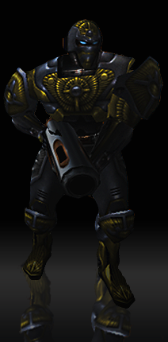
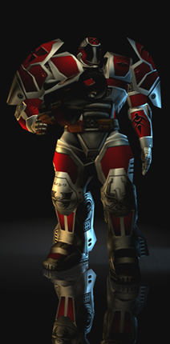
The
Juggernaut
class armor is the big boy. When it comes to raw firepower, the
Juggernaut is the only choice. A walking fortress, the Jug can flatten
the opposition in a matter of seconds. Capable of carrying 5 weapons,
including all heavy weapons, the Jug is a fearsome sight. It's main
weakness is that it suffers a huge penalty in speed, making it easy pickins
for a Scout or Assault class warrior.
Durability: High
Mobility: Low
Weapon Capacity: 5
Ammunition Capacity: High
Specialties: Fusion Mortar
Restricted: Laser Rifle, Cannot Pilot Vehicles
Pros:
+ Ability to sustain the most damage
+ Able to equip all heavy weapons
+ Able to carry the most ammunition of all Armors
Cons:
- Painfully slow, minimum mobility
- Cannot pilot vehicles
- Can be a walking target for lighter armors
Weapons:
Primary weapons are the weapons a warrior carries in his hands. These
can be divided into two types; Energy and limited ammo. Energy based weapons
have unlimited ammo due to the fact that they draw from the users energy
reserve to fire. Limited ammo weapons have a finite amount of ammunition that
depends on the armor of the user.
Weapon damage is broken into two categories. Direct Contact and Splash.
Direct Contact means that the weapons projectile must physically touch
the enemy to inflict damage. Splash damage indicates that direct contact with
the target is not necessary to inflict damage. The projectile will explode on
whatever it hits first; enemy, wall, ground, etc. The resulting explosion
inflicts the most damage at "ground zero", with decreasing damage inflicted
in the area surrounding the explosion.
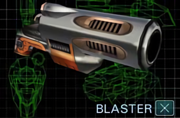
The
Blaster
is an energy based weapon with a high rate of fire. Think
Star Wars.. same idea. The blast emitted from the blaster bounces off walls
making it an effective indoor weapon.
Ammo: Energy
Rate of Fire: Fast
Projectile Speed: Very Fast
Damage: Low
Damage Type: Direct Contact
Aim: Manual
Max Effective Range: Medium
Use For: Indoor fights, can be good for taking out snipers at med.
range
The
Chaingun
is a limited ammo weapon that fires explosive bullets in a
spread pattern. Due to the spread pattern of the projectiles fired, the
chainguns effectiveness severely deteriorates as range increases. The chaingun
is useful for picking off damaged airborne enemies.
Ammo: Limited
Rate of Fire: Very Fast
Projectile Speed: Very Fast
Damage: High at close range, decreases with distance
Damage Type: Direct Contact
Aim: Manual
Max Effective Range: Medium
Use For: Picking off damaged enemies, close range/indoor fights
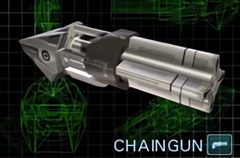
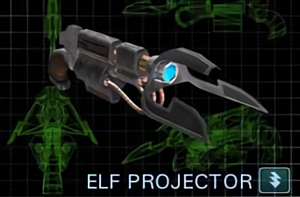
The
Elf (Electron Flex Projector)
is an energy based weapon that causes no damage to the
target. Instead, it drains the targets energy reserve, severely limiting the
targets mobility. Caution should be used when using the ELF gun, as it will
attack the closest target be it friend or foe.
Ammo: Energy
Rate of Fire: Continuous
Projectile Speed: Instant
Damage: None
Damage Type: Direct Contact
Aim: Auto
Max Effective Range: Very Short
Restrictions: Non-functional under water
Use For: Especially useful for flag defence
The
Fusion Mortar
is the most devastating weapon in Tribes 2, a limited
ammo weapon that lobs large mortars at the enemy. The mortar is primarily used
as an offensive weapon, as it easily wipes out enemy defenses.
Ammo: Limited
Rate of Fire: Slow
Projectile Speed: Medium
Damage: Very High
Damage Type: Splash
Aim: Manual, Lead Calculation with Targeting Laser/Beacon
Max Effective Range: Very Long
Use For: Long range bombardment
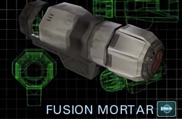
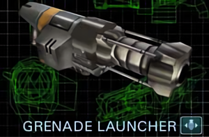
The
Grenade Launcher
fires standard explosive grenades at high
velocity. It is a limited ammo weapon that is well rounded for both indoor and
outdoor use. One of the main advantages of the Grenade launcher is that the
grenades can be bounced off walls and around corners, making it ideal for
clearing indoor rooms.
Ammo: Limited
Rate of Fire: Slow
Projectile Speed: Medium
Damage: High
Damage Type: Explosive Spread
Aim: Manual, Lead Calculator with Targeting Laser/Beacon
Max Effective Range: Medium
Use For: Clearing rooms, medium range bombardment
The
Laser Rifle
is the snipers best friend. This energy based weapon
shoots a extremely high velocity laser in a straight line with almost unlimited
range and precise accuracy. The damage inflicted by this laser depends on the
location of the hit, the armor of the target, and the amount of energy the user
has in reserve. The drawback of the Laser Rifle is that it it completely drains
the users energy reserve with each shot.
Ammo: Energy
Rate of Fire: Slow
Projectile Speed: Instant
Damage Type: Direct Contact
Aim: Manual
Max Effective Range: Very Long
Restrictions: Requires Energy Pack
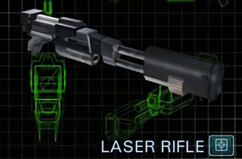
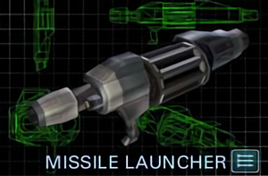
The
Missile Launcher
is a very versatile weapon. With it's ability to
automatically lock on to suitable targets, it can be used for both offensive
and defensive purposes.
Targets that can be locked on to are enemy sensors and base turrets,
enemy vehicles, and enemy players who's jet packs are heated from use.
Ammo: Limited
Rate of Fire: Slow
Projectile Speed: Medium
Damage: Very High
Aim: Manual until lock-on, missile follows target automatically
Damage Type: Splash
Max Effective Range: Very Long
Use For: Anti-Vehicle, flag defence, Attacking enemy sensors & base
turrets
The
Plasma Rifle
shoots super-heated balls of burning plasma at the
enemy. You'll notice the firing rate is higher than
that of the spinfuser, making it deadly if consecutive
shots are achieved.
Ammo: Limited
Rate of Fire: Medium
Projectile Speed: Low
Damage: High
Aim: Manual
Damage Type: Splash
Max Effective Range: Medium
Restrictions: Non-functional under water
Use For: Indoor combat, enemies using Shield Pack. Attacking enemy assets.
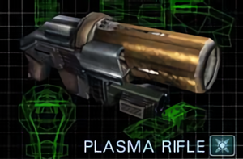
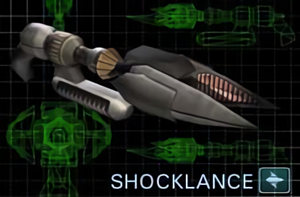
The
Shocklance
is a close range weapon that gives the enemy a zap!
Taking a large chunk of health with each hit, the main
advantage is the one-shot kill from behind.
Ammo: Energy
Rate of Fire: Slow
Projectile Speed: Instant
Damage: Varies on location
Aim: Manual
Damage Type: Direct Contact
Max Effective Range: Very Short
Restrictions: Non-functional under water
Use For: Light-defense against Juggernauts, disruption of incoming flag carriers, flipping enemy vehicles.
The
Spinfuser
is a long range weapon that is general purpose or the swiss army knife of the game.
It is the main weapon included in every load-out.
It has good range, fly straight, and is much easier to midair with than the plasma rifle.
The only drawback being reload time.
Ammo: Limited
Rate of Fire: Slow
Projectile Speed: Very Fast
Damage: High
Aim: Manual
Damage Type: Splash
Max Effective Range: Long
Use For: General purpose, Indoor and Outdoor combat. Offense and Defense.
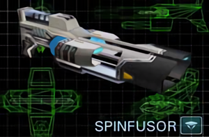
Grenades: Basic Grenade: The Basic Grenade is an explosive grenade that detonates after a few second delay. The resulting explosion inflicts moderate damage to the enemy;
the severity of which depends on the enemies proximity to the explosion. Concussion Grenade: This grenade inflicts minimal damage to the enemy. Instead, it creates a concussion blast that causes the enemy to drop weapons, packs, and flags.
Caution should be used with the Concussion Grenade, as it can also cause the
user and any teammates within range to drop their equipment. Flare Grenade: This grenade inflicts no damage to the enemy. Instead, it creates a bright flare that serves two main purposes. The first and most useful is that
it will decoy any missiles that are locked on to the user or his vehicle,
drawing the missile away and disabling it's lock. Alternatively it can be used
to signal teammates to a location. Whiteout Grenade: This grenade inflicts minimal damage to the enemy. Instead, it creates a blinding flash that can distract the enemy for a few seconds. The severity of
the blindness depends on the enemies proximity to the detonation. The Whiteout
Grenade has an effective range of 20 meters. Caution should be used with the
Whiteout Grenade, as it will also blind teammates. Deployable Camera: This item is not actually a grenade, but it's included here because it is equipped in place of grenades, and activated by pressing the grenade button.
The Deployable Camera, when activated, will be tossed like a grenade
and stick to whatever surface it comes in contact with. The user can then leave
the location and remotely view activity in the area via the Command Circuit. Can be used to detect Sensor Jammers.
Gear: Targeting Laser: The Targeting Laser is used for marking targets from a distance. When a target is marked by the laser, teammates are able to instantly lock on with the
Missile Launcher, and will have lead calculation enabled with the Mortar and
Grenade Launcher. It is also useful for defence by pointing out targets that
need to be defended or the flag carrier. Mine: The Mine is a weapon that is dropped on the ground. Once deployed the mine lies in wait for a passing warrior or vehicle to run over it. When this
happens, the mine explodes causing moderate to severe damage. Mines will
explode regardless of friend or foe coming in contact with it. Only 3 mines may
be carried at a time by a user, regardless of armor equipped. Beacon: The Beacon works like the Targeting Laser, but it can only be deployed by physically being in range of the target. Once in range, the user deploys the
beacon which then allows for teammates to instantly lock on with the Missile
Launcher, and lead calculation for the Mortar and Grenade Launcher.
The beacon can also be used as a marker. If the user immediately
presses H again after deploying the beacon, it will switch to marker mode.
Marker mode removes the lead calculation on a target and simply marks it by a
small circle. This signifies to the team that the beacon is not displaying a
target for attack, but rather a position on the map that could, for example,
have a Remote Inventory Station available for use. Health Kit: The Health Kit is an item that will restore a small amount of damage to the user. A Health Kit may only be used once and only one may be carried at
a time regardless of the armor equipped. The exception is if the user is
wearing an Ammo Pack in which case two Health Kits are allotted for use.
Credits: ScratchMonkey - First person to submit a tip and info. Thanks man! =) Sleef Barmer - Sent in some good sniping tips. Doh! - Havok Piloting tips. DigitalBlaze - Contributed some FAQ's that I should've remembered to add. ;)